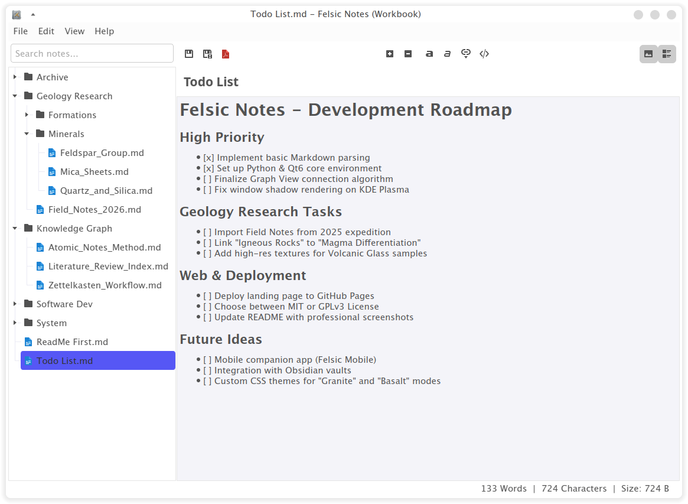

A note-taking application designed to be portable, lightweight, and fast. Manage your local Markdown files without any complications.

Everything you need, nothing you don't.
Works from USB drives or cloud folders (OneDrive, Google Drive). No complex installations required.
Find what you need in the blink of an eye. Search engine optimized for extreme speed and performance.
Your notes are yours. Saved as local .md files, without proprietary formats or vendor lock-in.
Available for Windows, macOS, and Linux. A consistent experience across all your desktop devices.
Can work alongside Obsidian vaults without any interference. Use both at the same time.
Uses less than 100MB of RAM. Opens instantly even on older machines or resource-limited systems.
Felsic Notes was built with Qt6 and Python to ensure the interface responds to your thoughts, not the other way around.
Download the version for your OS and point it to your notes folder.
Felsic Notes is free software. Read the license here.